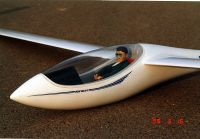
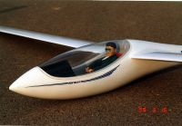
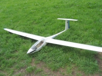
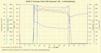
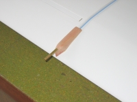

1998-99
ASW 27, 4 m wing span, wing profile is Eppler 203 to Eppler 193,
the pilot is recycled from the year '86, 4,5 kg glider mass.
This glider has good tempered characteristics due to the wing profile.
The ASW 27 got a Torcman 350 triton motor in front in autumn 2005. The electric motor is used to get back the model in cases where no thermals was found. By revolving the pilot and cutting the wing steel the mass of the model could reduced below the magic limit of 5 kg mass. The used 4S LiPo battery, 3200 mAh capacity, and the receiver battery is placed close to center of gravity. The picture below showing the old battery box from the earlier used NiMh battery. So in some cases the motor battery can be removed without influencing the center of gravity.


The propeller, motor, battery combination was measured for optimization criteria using a UniLog logger device. Below the measurement diagram:

Also the flight velocity was measured by the UniLog with a back pressure sensor. This gives a feeling in which flight situation which velocity is active. The pictures showing how the sensor is applied to the wing and the measurement diagram:


The construction plan of this glider was drawn using an AutoCAD school version (ASW27_Fluegel.pdf).